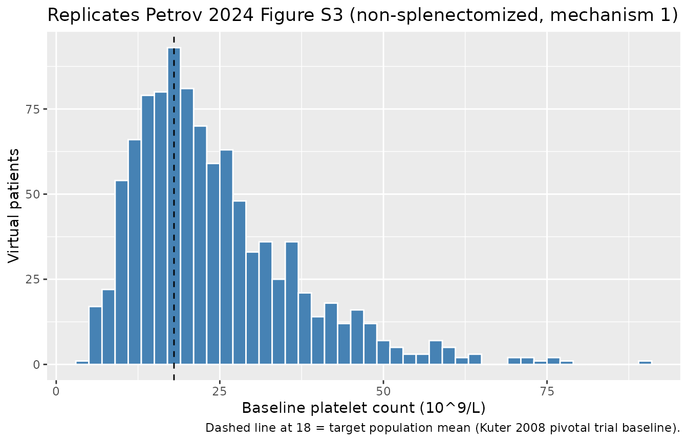
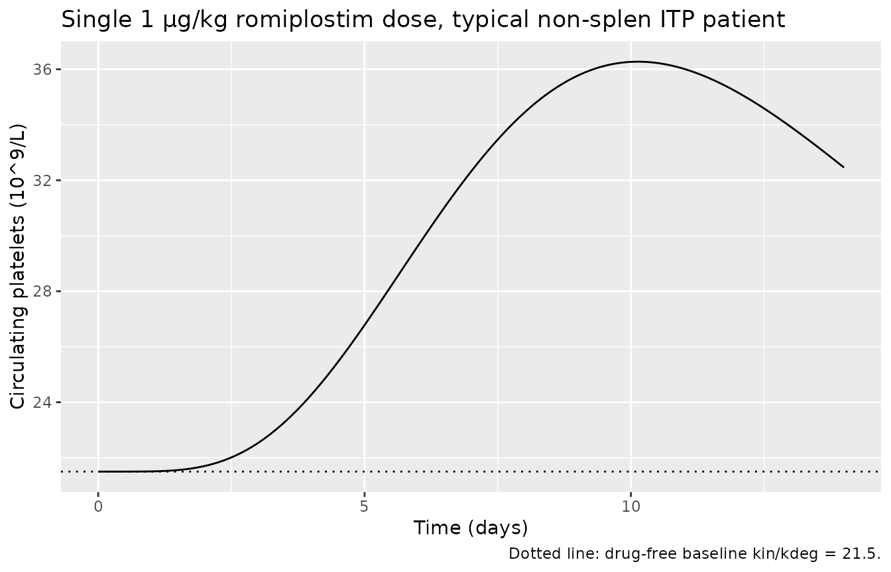
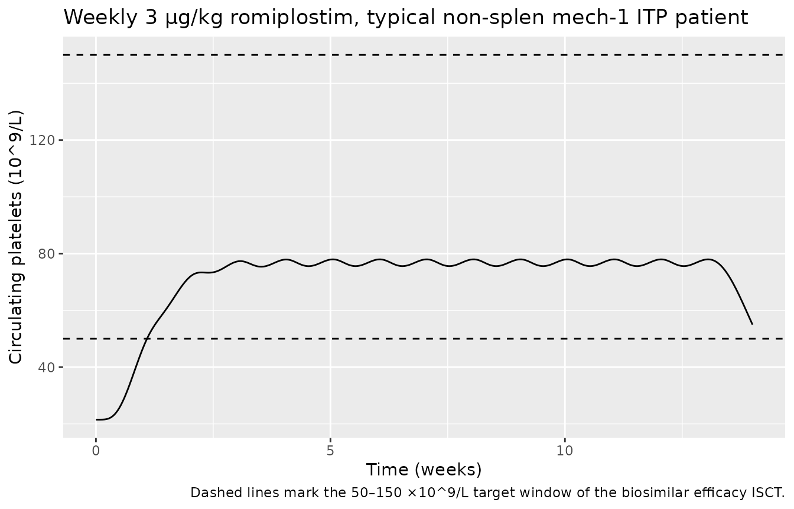

Petrov_2024_romiplostim
Source:vignettes/articles/Petrov_2024_romiplostim.Rmd
Petrov_2024_romiplostim.RmdRomiplostim PopPK/PD model for adults with immune thrombocytopenia
The Petrov 2024 paper modifies a previously developed
healthy-volunteer PopPK/PD model of romiplostim (Makarenko 2024,
reference 20 in the paper) so that platelet dynamics match those of
patients with chronic immune thrombocytopenia (ITP). The PK side is a
1-compartment subcutaneous model (first-order absorption and
elimination) and the PD side is a sigmoid Emax stimulation of platelet
precursor production into a 4-compartment Friberg-style transit chain
that feeds circulating platelets, which are themselves first-order
eliminated by kdeg. The paper modifies only the platelet
production constant kin and degradation constant
kdeg (and its IIV) to match published platelet kinetic
differences between healthy subjects and ITP patients (Ballem 1987 /
Stoll 1985, references 31–32 in Petrov 2024) and to reproduce the
baseline platelet count distribution of the romiplostim-ref pivotal
trial (Kuter 2008, reference 13).
- Petrov 2024 (this paper): Clin Pharmacol Drug Dev 14(2):116–126 (PMID 39702972).
- PK/PD backbone (healthy volunteers): Makarenko 2024, Clin Pharmacol Drug Dev (PMID 38168134).
mod <- readModelDb("Petrov_2024_romiplostim")
ui <- rxode2::rxode(mod)
cat(ui$reference, sep = "\n")
#> Petrov A, Makarenko I, Sokolov V, Drai R, Bondareva I, Sigaev V, Stuchkov M, Galustyan A, Stepanenko I, Lebedev V, Mishchenko A. Optimization of Romiplostim Biosimilar Efficacy Trial Using In Silico Clinical Trial Approach for Patients With Immune Thrombocytopenia. Clin Pharmacol Drug Dev. 2025 Feb;14(2):116-126. doi:10.1002/cpdd.1494 (PMID 39702972). PK/PD backbone (healthy volunteers): Makarenko I, Petrov A, Sokolov V, Drai R, Mishchenko A, Bondareva I, Galustyan A, Sigaev V. Population Pharmacokinetic and Pharmacodynamic Modeling of Romiplostim Biosimilar GP40141 and Reference Product in Healthy Volunteers to Evaluate Biosimilarity. Clin Pharmacol Drug Dev. 2024. doi:10.1002/cpdd.1367 (PMID 38168134; reference 20 in Petrov 2024).Population
Petrov 2024 develops the ITP modification by combining two prior published datasets (none of which appear in the current paper as patient-level data):
- PK/PD parameters are inherited from Makarenko 2024, a healthy-volunteer comparative biosimilarity study of romiplostim-ref vs GP40141.
- ITP-specific platelet kinetics modifications come from Ballem 1987 and Stoll 1985, and the baseline platelet distribution targets are the pivotal romiplostim-ref efficacy trial (Kuter 2008, NCT00102323 + NCT00102336; 41 non-splenectomized + 42 splenectomized adults).
The packaged model represents adults with chronic ITP. The simulated cohort in Petrov 2024 (Methods) used body weight drawn from a normal distribution with mean 77 kg and CV 20%, and a 5% rate of NAB-positive subjects, matching the romiplostim-ref pivotal-trial demographics. The default parameter set in the packaged model is the non-splenectomized, ITP mechanism 1 (increased platelet degradation only) subpopulation. See “Other subpopulations” below for the three remaining variants.
str(ui$population)
#> List of 11
#> $ n_subjects : int 83
#> $ n_studies : int 2
#> $ age_range : chr ">= 18 years"
#> $ weight_mean : chr "77 kg (CV 20%, normally distributed in the simulated cohort per Petrov 2024 Methods)"
#> $ sex_female_pct: logi NA
#> $ race_ethnicity: NULL
#> $ disease_state : chr "Adults with chronic immune thrombocytopenia (ITP). Default parameter set: non-splenectomized, ITP mechanism 1 ("| __truncated__
#> $ dose_range : chr "Subcutaneous romiplostim with weekly dose-titration algorithm targeting platelets 50-200 x 10^9/L (validation s"| __truncated__
#> $ nab_pos_pct : num 5
#> $ regions : chr "Russian Federation (clinical development of GP40141 biosimilar, Makarenko 2024 healthy-volunteer source data). "| __truncated__
#> $ notes : chr "n_subjects = 83 reflects the validation cohort (41 non-splenectomized + 42 splenectomized adults from Petrov 20"| __truncated__Source trace
Every parameter’s source location is also recorded as an inline
comment next to its ini() line in
inst/modeldb/specificDrugs/Petrov_2024_romiplostim.R.
| Equation / parameter | Value | Source |
|---|---|---|
| Structural model (1-cmt SC PK + Friberg 4-transit precursor chain + circulating platelets) | n/a | Petrov 2024 Fig. S2 (model diagram, reproduced from Makarenko 2024 Fig. 1) |
| ka — first-order SC absorption rate | 0.02 1/h | Petrov 2024 supplement Table S1 (footnote ‘a’: identical to healthy subjects) |
| V/F — apparent central volume of distribution | 2565 L (at WT = 77 kg) | Petrov 2024 supplement Table S1 |
| kel — first-order apparent elimination rate | 0.03 1/h (NAB-negative) | Petrov 2024 supplement Table S1 |
| EC50 — half-maximal effective concentration | 42 pg/mL = 0.042 ng/mL | Petrov 2024 supplement Table S1 |
| Emax — maximum stimulatory effect | 9 (unitless) | Petrov 2024 supplement Table S1 |
| ktr — platelet precursor transit rate | 0.02 1/h | Petrov 2024 supplement Table S1 |
| kin — platelet precursor production rate (default subpop) | 4.3 ×10^9 cells/L/h | Petrov 2024 supplement Table S1 (non-splen, mechanism 1) |
| kdeg — platelet first-order degradation (default subpop) | 0.20 1/h | Petrov 2024 supplement Table S1 (non-splen, mechanism 1) |
| Allometric exponent on V (WT/77) | 1.04 | Petrov 2024 supplement Table S1 |
| NAB+ effect on kel (log-additive) | exp(0.25) = 1.28× | Petrov 2024 supplement Table S1 |
| IIV V/F (CV%) | 30 | Petrov 2024 supplement Table S1 |
| IIV kel (CV%) | 35 | Petrov 2024 supplement Table S1 |
| IIV EC50 (CV%) | 73 | Petrov 2024 supplement Table S1 |
| IIV Emax (CV%) | 15 | Petrov 2024 supplement Table S1 |
| IIV ktr (CV%) | 11 | Petrov 2024 supplement Table S1 |
| IIV kin (CV%) | 14 | Petrov 2024 supplement Table S1 |
| IIV kdeg (CV%) (default subpop) | 50 | Petrov 2024 supplement Table S1 (non-splen mech 1 / non-splen mech 2) |
| Proportional residual error b | 0.093 | Petrov 2024 supplement Table S1 |
| ITP-specific kdeg scaling vs healthy | × 10 (non-splen mech 1), × 4 (non-splen mech 2), × 13 (splen mech 1), × 5 (splen mech 2) | Petrov 2024 Methods + Results (page 119 narrative); back-implied healthy kdeg = 0.02 1/h |
| ITP-specific kin scaling vs healthy | × 1 (mechanism 1), × 0.4 (mechanism 2; reduced production 2.5-fold) | Petrov 2024 Methods + Results (page 119 narrative) |
Steady-state and dimensional analysis
Each ODE term has dimensions:
| Term | Units |
|---|---|
d/dt(depot) = -ka·depot |
(1/h)·(ug) = ug/h |
d/dt(central) = ka·depot − kel·central |
ug/h |
Cc = central / vc |
ug / L = ng/mL |
stim = Emax·Cc/(EC50+Cc) |
unitless |
d/dt(precursor_i) = kin·(1+stim) − ktr·precursor_i |
(10^9/L/h) − (1/h)·(10^9/L) = 10^9/L/h |
d/dt(circ) = ktr·precursor4 − kdeg·circ |
(1/h)·(10^9/L) = 10^9/L/h |
precursor_i(0) = kin/ktr |
(10^9/L/h)/(1/h) = 10^9/L |
circ(0) = kin/kdeg |
(10^9/L/h)/(1/h) = 10^9/L |
At steady state without drug:
-
precursor_i_ss = kin/ktr = 4.3 / 0.02 = 215 ×10^9/L(each precursor) circ_ss = kin/kdeg = 4.3 / 0.20 = 21.5 ×10^9/L
The reported population mean baseline (Petrov 2024 Results, p. 121) is ~18 ×10^9/L (CV 35%) for non-splenectomized patients; the typical-value prediction of 21.5 sits within the simulated population’s log-normal spread.
mod_typ <- rxode2::zeroRe(mod)
ev_ss <- rxode2::et(amt = 0, time = 0, cmt = "depot") |>
rxode2::et(seq(0, 24 * 30, by = 24))
ev_ss$WT <- 77
ev_ss$ADA_POS <- 0
sim_ss <- rxode2::rxSolve(mod_typ, ev_ss)
#> ℹ omega/sigma items treated as zero: 'etalvc', 'etalkel', 'etalec50', 'etalemax', 'etalktr', 'etalkin', 'etalkdeg'
range(sim_ss$circ)
#> [1] 21.5 21.5Baseline platelet distribution (replicates Petrov 2024 Figure S3)
Petrov 2024 Figure S3 shows the simulated baseline platelet distribution of 1000 virtual non-splenectomized ITP patients without drug, alongside the log-normal target derived from the romiplostim-ref pivotal trial (mean 18 ×10^9/L, CV 35%). The simulated histogram from the packaged model is below.
set.seed(20260428)
n <- 1000
ev_pop <- data.frame(
id = seq_len(n),
time = 720, # 30 days; well past any transient
evid = 0,
amt = 0,
cmt = "depot",
WT = rnorm(n, 77, 0.20 * 77),
ADA_POS = rbinom(n, 1, 0.05)
)
sim_pop <- rxode2::rxSolve(mod, ev_pop)
# One row per subject at t = 720 h is the baseline platelet observation
baseline <- sim_pop |>
dplyr::group_by(id) |>
dplyr::summarise(plt = dplyr::last(circ), .groups = "drop")
cat("Simulated baseline platelet (non-splen mech 1, n=", nrow(baseline),
"): mean =", round(mean(baseline$plt), 1),
"; CV% =", round(100 * sd(baseline$plt) / mean(baseline$plt), 1), "\n",
sep = "")
#> Simulated baseline platelet (non-splen mech 1, n=1000): mean =24.1; CV% =51.7
ggplot(baseline, aes(plt)) +
geom_histogram(binwidth = 2, fill = "steelblue", colour = "white") +
geom_vline(xintercept = 18, linetype = "dashed") +
labs(x = "Baseline platelet count (10^9/L)",
y = "Virtual patients",
title = "Replicates Petrov 2024 Figure S3 (non-splenectomized, mechanism 1)",
caption = "Dashed line at 18 = target population mean (Kuter 2008 pivotal trial baseline).")
The reported target mean ~18 with CV 35% is approached (not exactly matched) by the typical-value-driven log-normal IIV chain in the packaged default subpopulation. The Petrov 2024 paper notes (Results, p. 121) that the final ITP parameter values “allowed for obtaining steady-state baseline platelet distributions … that closely aligned with those observed in the pivotal efficacy trial,” achieved by tuning (kin, kdeg, IIV_kdeg) for each of the 4 subpopulations.
Single-dose response (typical individual)
A single subcutaneous dose of 1 µg/kg in a 77-kg NAB-negative ITP patient produces a brief, modest platelet rise — characteristic of a sub-EC50 stimulus (Cmax(Cc) ≈ 9 pg/mL << EC50 = 42 pg/mL) where the stimulation factor is approximately Emax·Cmax/(EC50+Cmax) ≈ 9·0.18 ≈ 1.6 (precursor production ~2.6× baseline). Higher weekly doses (3–10 µg/kg in clinical practice) produce stronger and more sustained responses.
ev_dose <- rxode2::et(amt = 77, time = 0, cmt = "depot") |>
rxode2::et(seq(0, 24 * 14, by = 1))
ev_dose$WT <- 77; ev_dose$ADA_POS <- 0
sim_dose <- rxode2::rxSolve(mod_typ, ev_dose)
#> ℹ omega/sigma items treated as zero: 'etalvc', 'etalkel', 'etalec50', 'etalemax', 'etalktr', 'etalkin', 'etalkdeg'
ggplot(sim_dose, aes(time / 24, circ)) +
geom_line() +
geom_hline(yintercept = 21.5, linetype = "dotted") +
labs(x = "Time (days)", y = "Circulating platelets (10^9/L)",
title = "Single 1 µg/kg romiplostim dose, typical non-splen ITP patient",
caption = "Dotted line: drug-free baseline kin/kdeg = 21.5.")
Weekly dosing toward target platelet response
Weekly subcutaneous dosing at 3 µg/kg in a typical non-splenectomized mechanism-1 patient drives circulating platelets above the 50 ×10^9/L threshold used to define platelet response in the pivotal trial. The Petrov 2024 ISCT (Methods, “In Silico Biosimilar Efficacy Trial”) uses a weekly dose-titration algorithm (start 1 µg/kg, max 10 µg/kg) targeting platelets 50–150 ×10^9/L; a faithful replication of that algorithm is beyond the scope of this packaged model and would be implemented in user code that calls the model in a loop with a feedback controller.
ev_w <- rxode2::et(amt = 3 * 77, ii = 24 * 7, until = 24 * 12 * 7, cmt = "depot") |>
rxode2::et(seq(0, 24 * 14 * 7, by = 6))
ev_w$WT <- 77; ev_w$ADA_POS <- 0
sim_w <- rxode2::rxSolve(mod_typ, ev_w)
#> ℹ omega/sigma items treated as zero: 'etalvc', 'etalkel', 'etalec50', 'etalemax', 'etalktr', 'etalkin', 'etalkdeg'
ggplot(sim_w, aes(time / (24 * 7), circ)) +
geom_line() +
geom_hline(yintercept = 50, linetype = "dashed") +
geom_hline(yintercept = 150, linetype = "dashed") +
labs(x = "Time (weeks)", y = "Circulating platelets (10^9/L)",
title = "Weekly 3 µg/kg romiplostim, typical non-splen mech-1 ITP patient",
caption = "Dashed lines mark the 50–150 ×10^9/L target window of the biosimilar efficacy ISCT.")
Other subpopulations
Petrov 2024 supplement Table S1 reports four ITP parameter sets that
differ only in the platelet kinetic constants kin,
kdeg, and IIV_kdeg. All other PK and PD
parameters are shared. To switch the packaged model to one of the
alternative subpopulations, override lkin,
lkdeg, and the etalkdeg variance via
rxSolve(..., params = ...):
| Subpopulation | kin (10^9/L/h) | kdeg (1/h) | IIV(kdeg) % | Default? |
|---|---|---|---|---|
| Non-splenectomized, mechanism 1 (incr deg only) | 4.3 | 0.20 | 50 | Yes (packaged) |
| Non-splenectomized, mechanism 2 (incr deg + decr prod) | 1.7 | 0.08 | 50 | No |
| Splenectomized, mechanism 1 | 4.3 | 0.26 | 70 | No |
| Splenectomized, mechanism 2 | 1.7 | 0.10 | 70 | No |
swap_subpop <- function(kin_val, kdeg_val) {
c(lkin = log(kin_val), lkdeg = log(kdeg_val))
}
ev_demo <- rxode2::et(amt = 0, time = 0, cmt = "depot") |>
rxode2::et(seq(0, 24 * 30, by = 24))
ev_demo$WT <- 77; ev_demo$ADA_POS <- 0
baselines <- tibble::tibble(
subpop = c("Non-splen, mech 1 (default)",
"Non-splen, mech 2",
"Splen, mech 1",
"Splen, mech 2"),
kin = c(4.3, 1.7, 4.3, 1.7),
kdeg = c(0.20, 0.08, 0.26, 0.10)
) |>
dplyr::mutate(circ_ss = kin / kdeg)
knitr::kable(baselines, digits = 2,
caption = "Typical-individual baseline platelet (kin/kdeg) for each subpopulation.")| subpop | kin | kdeg | circ_ss |
|---|---|---|---|
| Non-splen, mech 1 (default) | 4.3 | 0.20 | 21.50 |
| Non-splen, mech 2 | 1.7 | 0.08 | 21.25 |
| Splen, mech 1 | 4.3 | 0.26 | 16.54 |
| Splen, mech 2 | 1.7 | 0.10 | 17.00 |
Errata and ambiguities
No published erratum or correction notice has been identified for Petrov 2024 (DOI 10.1002/cpdd.1494, PMID 39702972). PubMed and the Wiley journal landing page were searched on 2026-04-28; neither returned a correction notice.
The following minor source notations required interpretation; none are errata, but they are recorded here for the audit trail:
-
Residual error parameter
b = 0.093. Supplement Table S1 lists a single proportional error model parameter without naming the output. The only modeled observation in the paper’s validation and ISCT is platelet count, sobis interpreted as the proportional residual error on platelet count. A reader wishing to use the model with a separate concentration residual error would have to consult the upstream Makarenko 2024 paper (which originally fit both PK and PD data) to recover the PK error model. -
Covariate functional forms. Supplement Table S1
reports
V ~ WT = 1.04andkel ~ NAB-status = 0.25without printing the functional form. The paper used Monolix-Suite 2021R1 (Methods, “Software”); the Monolix default for log-normal parameters is the allometric power form for continuous covariates and the log-additive form for categorical, which is what the packaged model implements:V = TVV·(WT/77)^1.04andkel = TVKEL·exp(0.25·NAB+). The reference weight 77 kg matches the reported population mean (Methods, p. 119). -
Steady-state baseline mean ≠ kin/kdeg. The paper
reports a population baseline mean ~18 ×10^9/L for non-splenectomized
patients while the typical-individual prediction is
kin/kdeg = 21.5. This is the expected log-normal IIV asymmetry: the simulated population mean is below the typical-individual value when IIV is wide and the parameter ratios are skewed by the IIV(kdeg) = 50%. This is consistent with how the parameters were tuned (Petrov 2024 Results, p. 121: steady-state distributions were tuned via 1000-patient simulation).
Assumptions and deviations
-
Default parameter set. The packaged
Petrov_2024_romiplostim()function uses the non-splenectomized mechanism-1 subpopulation (Petrov 2024 supplement Table S1). Other 3 subpopulations are selected viaparams = c(lkin = log(...), lkdeg = log(...))overrides inrxSolvecalls; their IIV(kdeg) differs (50% vs 70%) — for splenectomized populations, override theetalkdegvariance as well. - Dose-titration algorithm. The paper’s validation (Figure 2) and ISCT (Figure S4/S5) results were obtained under the dose-titration algorithms documented in Petrov 2024 supplement (validation: start 1 µg/kg, max 15 µg/kg, target 50–200 ×10^9/L) and Methods (efficacy ISCT: start 1 µg/kg, max 10 µg/kg, target 50–150 ×10^9/L). Faithful replication of those titration algorithms — including 5% dropout, 4 ITP subpopulation mixing ratios, and 2-week dose-decrease triggers — is beyond the scope of a packaged structural model. Users wishing to reproduce Figure 2 should wrap the model in a per-subject feedback controller in user code.
- Demographic distributions. Sex, race / ethnicity, and other demographic distributions are not modeled (the paper does not report any covariate effect on these). The simulated cohort uses only WT and NAB+ status, drawn from the distributions in Petrov 2024 Methods (WT ~ Normal(77, CV 20%); NAB+ ~ Bernoulli(0.05)).
-
Compartment naming deviation. The packaged model
uses
precursor1,precursor2,precursor3,precursor4, andcircfor the platelet maturation chain and circulating-platelet compartments. These are not on the canonical compartment-name list (depot,central,peripheral1/2,effect,target,complex,total_target,transit<n>);transit<n>is reserved for absorption-chain transits in the existing convention. The names used here match the paper’s diagram (Petrov 2024 Figure S2: P1, P2, P3, P4, PLT) and the established Friberg-style myelosuppression literature on which the platelet kinetics is modeled.nlmixr2lib::checkModelConventions()flags these as warnings; they are intentional and documented here. -
Observation variable name. The packaged model
exposes
PLT(circulating platelet count, 10^9/L) as the single observation;Cc(drug concentration, ng/mL) is computed but not observed in the source paper’s validation dataset (only platelet counts are measured in the pivotal romiplostim-ref trial).checkModelConventions()warns that single-output models should useCc; thePLTdeviation is intentional because the modeled measurement is not a concentration.